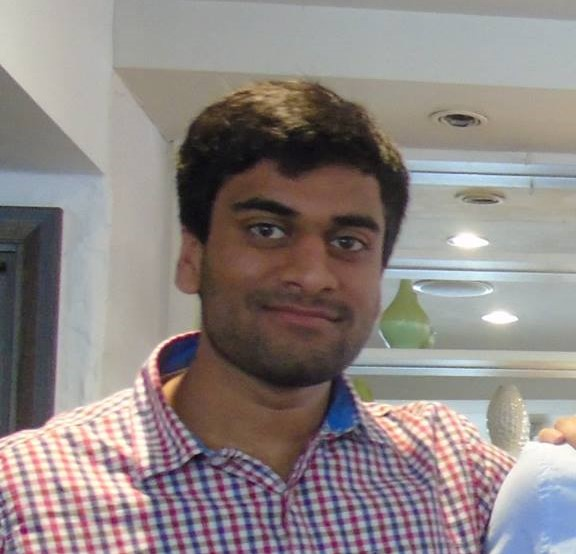
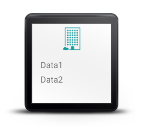
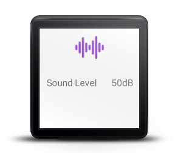
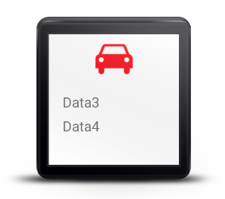

City Pollution Visualizer
Project Brief
Our project brief is to design and develop a city pollution visualisation app for smartwatches that allows users to view key pollution statistics about their current location that may assist in deicision making.
Clients:

Founded in 1968, Intel is one of the largest american multinational manufacturers of a range of advanced internal computer circuitry. Intel has been assisting in this project by providing access to the Intel Smart Citizen API, a multi sensor arduino board that gets the current light, noise and air quality levels from its sensors.

We have been partnered with the Physical Computing section of the Computer Science Department in UCL, specifically by Dr Nicolai Marquardt and Steven Houben. They are supervising our project and have provided resources such as the smartwatches and the Intel SmartCitizen board as well as guiding us throughout the development of the project in Term 1.

Microsoft Research is the research division of Microsoft, aiming to be at the forefront of technology and solve difficult real world problems with state of the art technologies.
Our team members are:
Madeleine Whitehall
Technical Lead, Chief Researcher, Chief Editor
zcabmwh@ucl.ac.uk

Srikrishna Datla
Project Lead, Client Liaison, Technical Lead
zcabdat@ucl.ac.
Project Background
Nearly 9,500
people die in London every year due to long term exposure to air pollution. For the past 5 years London has been in breach of the EU NO 2
safety limit.
Because of this we have been tasked to design a smartwatch app that gets up to date data about the levels of air pollution as well as other forms of pollution so people can make more informed decisions about where in the city they go.
Challenges
Upon starting the project, there were some challenges we thought we might face. Maybe our client would not know exactly what they wanted the finished app to do so after every meeting, changing their requirements and deadlines, leaving us without a confirmed set of goals. The chance that one team member does not contribute enough, if at all would make the other member’s workload, with both the documentation and development of the app, unending. So far we have avoided all these problems.
To make the project work well, we both realised some things needed to be done. We needed to have a good relationship and therefore strong communication between ourselves and the clients, with regular correspondence and meetings.. This will help us in fully understanding the requirements and limitations of the project before we even considered delivering them, ensuring that we are not promising a product we cannot produce. Good project management would be required with, when necessary, revisitations and refinements of all aspects of our task. Though we have divided the work between us both, we still collaborate on it. Brainstorming design ideas, finding bugs in code and documentation is a group effort.
Requirements
Must:
-
Use 3 pollution data sets updated at different rates ie live, daily, yearly
- Display data visually on a smartwatch
-
Have a general view and a detailed view for each type of data
- Interact with an android app
-
Must update as the user moves round the city and periodically or when the user requests a refresh
- Have a clear simple UI
Should:
-
Have our own database to consolidate all other data sources into
-
Send notifications to users based on air quality and their quality preferences
- Have synchronous and asynchronous connection to database
- Store the last set of data offline in the app
- Have clearly defined zones for the city
Could:
- Include social data eg twitter posts or facebook etc.
- Include traffic data
- Allow user to select which information they want to display
Would:
- Extend for use in other cities
-
Extend to a fully fledged android or web app for visualisations as well
-
Develop api for our database so others can use the data we have consolidated
- Expand the number of data sources we are using to
DataSets Research
Our intial research revolved around the open source datasets available to use for the app, and we produced the following documentation:
We only looked into open source datasets available as we wanted to find datasets that were not difficult to access. Another criteria for selection was the relevance of the dataset, with our priorities on detailed Air quality statistics as well as location based data as our smartwatch app will rely on updates when entering a new zones within London.
Our conclusion from this research was three chosen datasets:
-
London Air API - Provides Hourly and Weekly detailed updates on air pollution for all zones within London (JSON / XML)
-
Intel Smart Citizen API - Provides Live updates on air, light and noise pollution from a variety of Smart Citizen devices located around London (JSON / XML)
-
Data.Gov.UK - Provides Yearly updates on air and social ( e.g. Crime) pollution for all zones in London XML / PDF / Excel)
Technologies
The following technologies have been selected by our team to be used for elements of our project: Java for the Smartwatch app and smartphone app programming, Node JS for the backend API, MongoDB for the data storage for the pollution data, Heroku used to host the app.
We have selected 3 data sets for our project that will provide us with a variety of different interval updates and detailed information about pollution types. This decision was made as these were the most relevant pollution data and the frequency of updates were spaced out enough for us to have reliable and relevant data for the user to use with a range of historical and live data.
In terms of hardware, we are aiming the app to be used with android smartphones and android wear smartwatch.Another hardware device being used is the Intel Smart Citizen, an Arduino board that contains many sensors to collect data about air, noise and light pollution. We are using this board as we are able to query the sensor values from all Smart Citizen boards within the London area.

Possible Smartwatches
In our initial requirements meeting with the client, we were asked to look into suitable smartwatches to use as a template for our smartwatch app and that was within budget of the project.
| Smartwatch |
Details |
| Apple iWatch |
- Square screen
- 340x272 pixels
- Expensive (possibly out of budget)
- iOS based, difficult to connect to Android Smartphone
|
| Samsung Galaxy Gear |
- Square screen
- 360x480 pixels
- Within budget
-
Android Wear, Java Based, easy to connect to Android Smartphone
|
| Microsoft Band |
- Square screen
- 320x128 pixels
- Within budget
-
Small display size, may be difficult to produce visualisations for that size
|
| Sony Smartwatch 3 |
- Square screen
- 320x320 pixels
- Within budget
-
Android Wear, Java Based, easy to connect to Android Smartphone
|
Based on the availability of the researched smartwatches and the prices, we have chosen to use the Sony Smartwatch 3. The large screen size of the smartwatch is beneficial to us as we have the ability to use a much larger area to display visualisations (320 X 320 px), allowing for much more detailed views.
Visualisations
As part of our intial research, our clients requested that we produce 10 - 15 potential visusalisations that could be implemented with detailed explanation of their workings and how we intend the user to work the interface.
Below are the intial visualisations that we produced with a brief explanation of how they will be implemented:
Proof of Concept
After creating our individual visualisations, we had to decide on a final visualisation that we would actually implement and this is our Proof of Concept. The below images were made in the Android Studio and show the layouts of our individual views for our application.

Social Pollution Screen

Sound Pollution Screen

Traffic Levels Screen
Project Overview Diagram

As shown in the diagram, our project attempts to collect data from multiple data source to produce a city pollution app for London. This the basic overview of how technologies are used within our project, with a Node JS API being used to query the data sources and saving the queried results into a MongoDB database. The smartphone makes requests and gets responses from the API in JSON/XML format and this is passed onto the smart watch where data is shown in visualisations for the user.
Example Update Process

Here is a simple example of what we envision the data update process to be for our app with the interaction between technologies.
Bi-Weekly Reports
16/10/15
30/10/15
16/11/15
27/11/15
11/12/15
Plans for Term 2
During the course of Term 1, we managed to understand the project requirements and produce a set of potential visualisations for the smartwatch app - finally deciding on a single design that we produced a Proof of Concept for. We have also confirmed with the clients regarding our plans for the technologies that we will use with the project, and they have confirmed our choices.
Using the information we have gathered our plan for Term 2 is the following:
-
Create the NodeJS RESTful API with links to MongoDB using Heroku
-
Develop a schema with guidelines for the combined datasets being fed into our API
-
Retrieve the data from the Data.Gov.UK website using an automated system
-
Produce the Android application that generates requests on behalf of the smartwatch and reads responses to send to the smartwatch
-
Create the Smartwatch visualisation UI as well as the data transmission service for the smartwatch app
-
Implement the testing strategies that we have researched into
Repository
For all aspects of our project, we have chosen to keep all of our code in Github Repositories as they support version control, ease of use and allow us to have separate repositories for our different elements of the project - e.g. NodeJS Server, Smartwatch Frontend and Smartphone App
Below is a link to our Github Repository for the frontend and backend code:
Backend Git Repo
Frontend Git Repo